Happy 10th Monthversary, Sayang!
Sepuluh bulan penuh tawa, cerita manis, petualangan seru, dan rasa syukur karena takdir mempertemukan aku dengan kamu.
Garis Waktu Perjalanan Cinta
Dari rasa canggung di awal pertemuan, obrolan larut malam, kencan manis di bioskop, sampai petualangan seru yang bikin makin sayang.
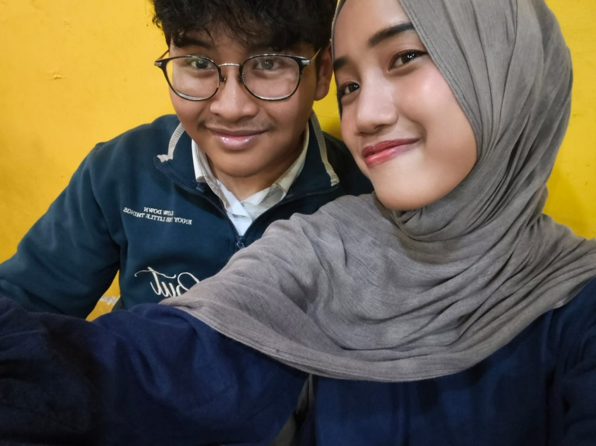
Hari Pertama NyamanPertama Kali Bertemu & Nyambung
Masih ingat senyum malu-malumu saat awal ketemu? Dari sekadar obrolan santai, ternyata ada kenyamanan luar biasa yang gak pernah aku rasain sebelumnya. Hari itu jadi awal kisah paling indah di hidupku.
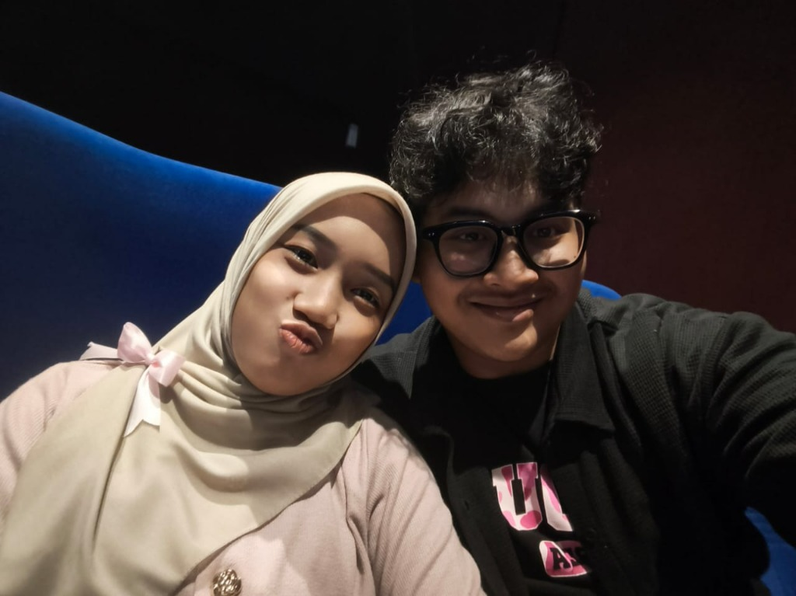
Movie DateNonton Bioskop & Berbagi Popcorn
Kencan pertama nonton bareng di bioskop. Duduk bersebelahan, tangan saling mendekat saat ambil popcorn, dan tawa lucumu yang bikin filmnya terasa sepuluh kali lebih seru. Pita pink di hijabmu hari itu manis banget!
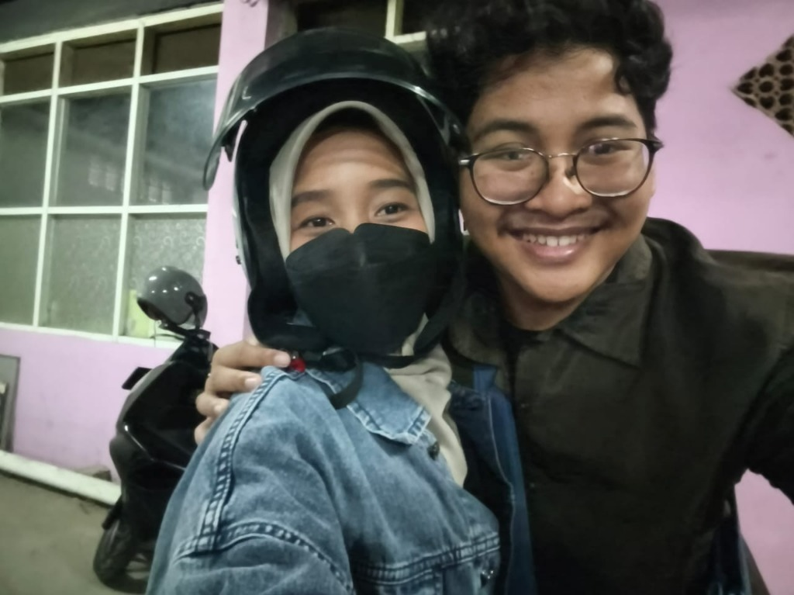
Night Ride BarengMotoran Berdua Menembus Kota
Walau macet dan berdebu, setiap boncengan motoran bareng kamu selalu terasa istimewa. Pelukan hangatmu dari belakang dan obrolan kita sepanjang jalan bikin jalanan kota jadi tempat paling tenang.
Kencan Seru & Nostalgia di Ragunan
Hari penuh langkah kaki, tawa renyah, lihat jerapah tinggi, jajan kentang spiral lezat, dan istirahat santai di dekat air mancur. Momen sederhana tapi kebahagiaannya menempel lekat di hati.
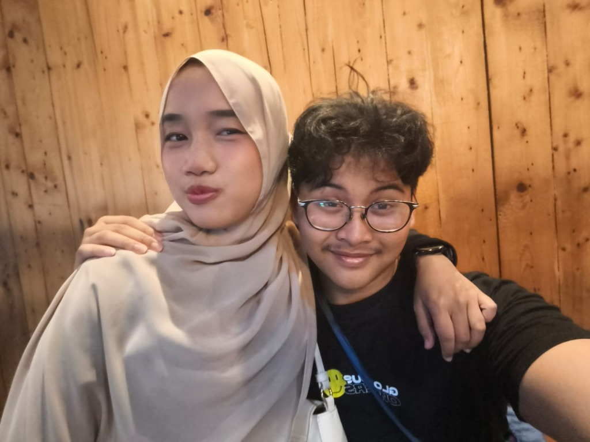
Today & Forever10 Bulan Penuh Kasih & Masa Depan Cerah
Sepuluh bulan kita saling melengkapi, saling memaafkan, dan saling mendukung mimpi masing-masing. Terima kasih sudah setia, sabar, dan selalu jadi rumah ternyaman untuk pulang.
Cerita Kencan Manis di Ragunan Zoo 🦒✨
Kencan outdoor paling berkesan! Udara segar, pepohonan rindang, jalan santai berdua, dan segudang tingkah lucu yang bikin kita ketawa sepanjang hari.
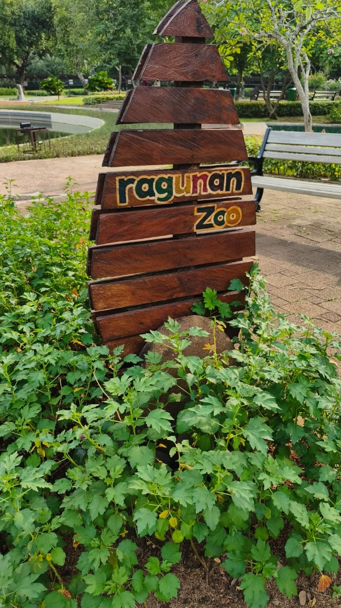
Papan Kayu Ragunan Zoo
Momen pas baru sampai dan excited banget mau keliling. Suasana hijau asri yang langsung menyambut kencan seru kita berdua!
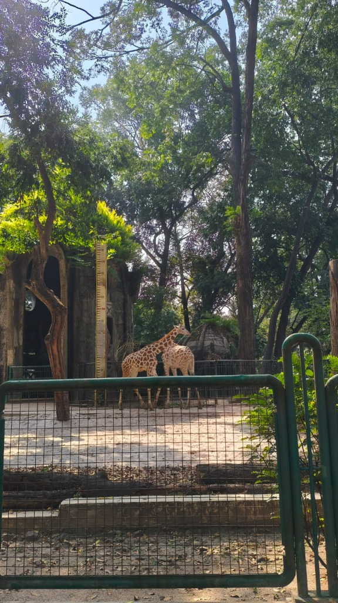
Kandang Jerapah yang Gagah
Serunya ngeliatin dua jerapah tinggi berdiri di bawah rindangnya pepohonan. Ekspresimu yang takjub dan ceria selalu bikin aku ikutan bahagia.
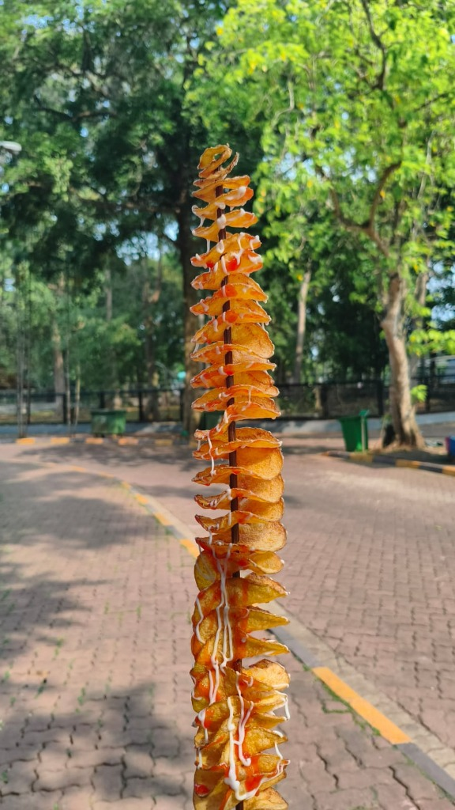
Kentang Spiral Ulir Saus Mayones
Gak afdol rasanya kalau ke Ragunan gak jajan kentang spiral panjang ini! Renyah, gurih, saus cabai plus mayones yang kita makan gantian sambil jalan.
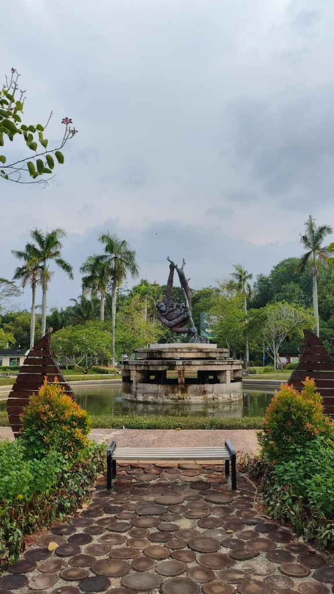
Air Mancur & Bangku Taman
Duduk di bangku taman dekat air mancur ikonik primata. Dengerin suara gemercik air sambil ngelurusin kaki dan ngobrolin banyak hal lucu.
Senyummu yang Mengalahkan Teriknya Matahari
Foto selfie berdua yang paling aku suka. Kamu dengan hijab pink manismu dan aku dengan senyum lebarku yang gak bisa disembunyiin kalau lagi di dekatmu.
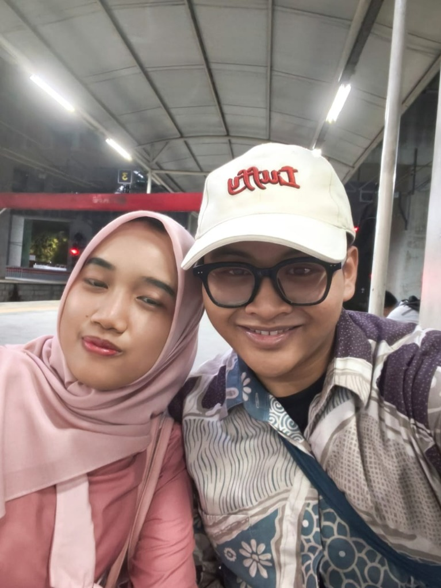
Nunggu di Halte & Stasiun
Muka capek setelah ribuan langkah, tapi senyum puas di wajah kita gak pernah luntur. Perjalanan pulang yang bikin kangen bahkan sebelum kita berpisah.
Album Foto Manis Berdua
Setiap jepretan kamera menyimpan sejuta rasa. Sentuh fotonya untuk melihat kartu berputar (3D Flip) atau klik untuk memperbesar kenangan.
Senyum Terbaikmu
"Hijab pink dan senyum termanismu di bawah rindangnya pepohonan Ragunan. Momen paling berharga."
Ragunan Zoo DatePita Pink Cantik
"Selfie di bioskop sebelum film mulai. Gaya duck face manismu selalu bikin gemas!"
Cinema PremiereTatapan Teduh
"Dua kepala saling mendekat, senyum bahagia yang tulus tanpa beban. Bersamamu selalu tenang."
Cozy DayJerapah Kembar
"Dua jerapah yang kita foto bareng. Kamu sampai jinjit-jinjit saking penasarannya!"
Ragunan ZooBoncengan Kesayangan
"Pakai helm hitam, masker, dan jaket jeans. Teman seperjalanan paling setia di segala cuaca."
City RideKentang Spiral Jumbo
"Camilan wajib kencan! Gigitan pertama garing, bumbu pedas manis, dan kita rebutan tusuknya."
Ragunan SnackRangkulan Hangat
"Nongkrong santai di cafe. Duduk mepet, merangkul bahumu, sambil ngebahas masa depan kita."
Coffee & Talk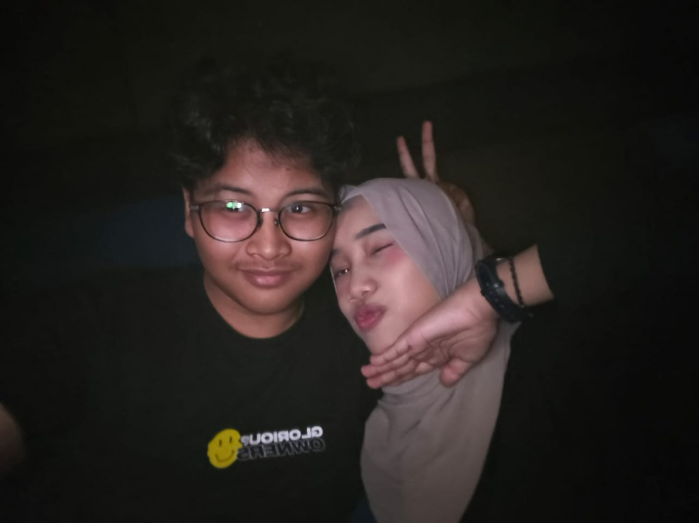
Peace & Pose Lucu
"Pose dua jari andalan kita! Di mana pun tempatnya, kalau sama kamu pasti ada aja tingkah konyolnya."
Cinema Lobby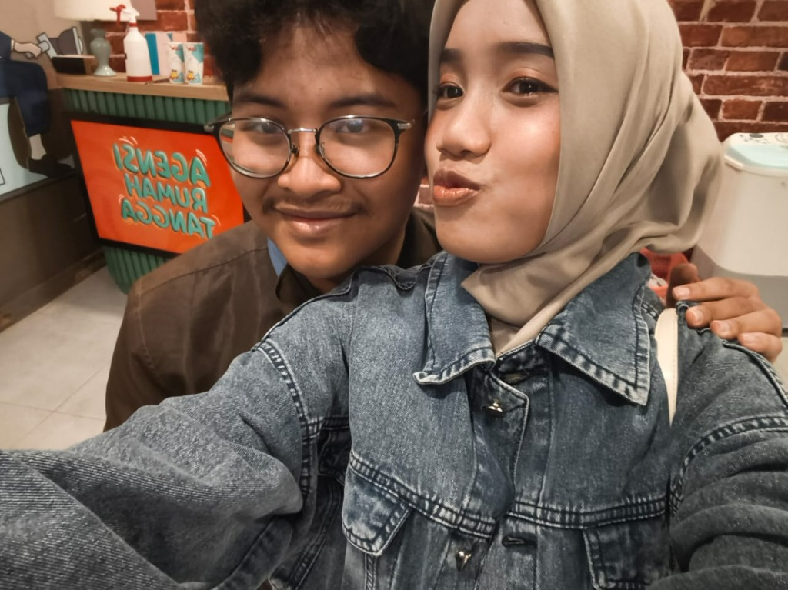
Matching Style
"Kencan jalan-jalan santai di mall. Kamu pakai jaket denim cantik dan selalu jadi pusat perhatianku."
Mall DateTaman Schmutzer
"Patung primata di kolam air mancur dan jalan kayu melingkar. Sudut teduh tempat kita cerita-cerita."
Ragunan Garden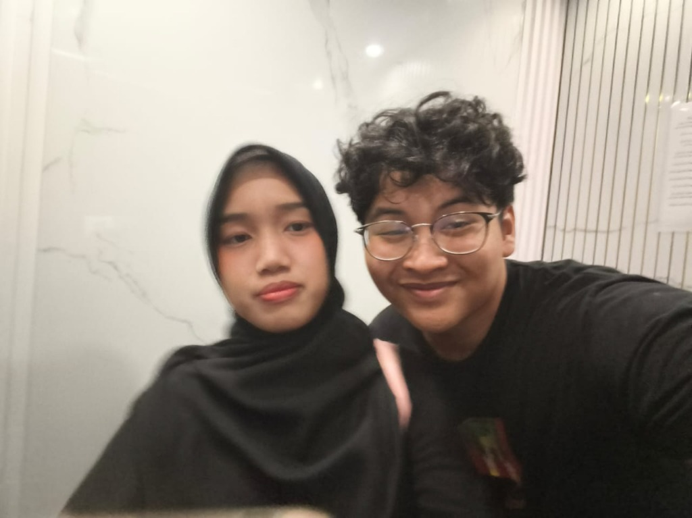
Black Outfit Match
"Kombinasi warna hitam elegan kita berdua. Walau buru-buru, tetap sempatkan mirror selfie!"
Elevator SnapPerjalanan Pulang
"Menunggu armada bareng setelah seharian jalan di Ragunan. Letih tapi hati dipenuhi rasa syukur."
Shelter Moment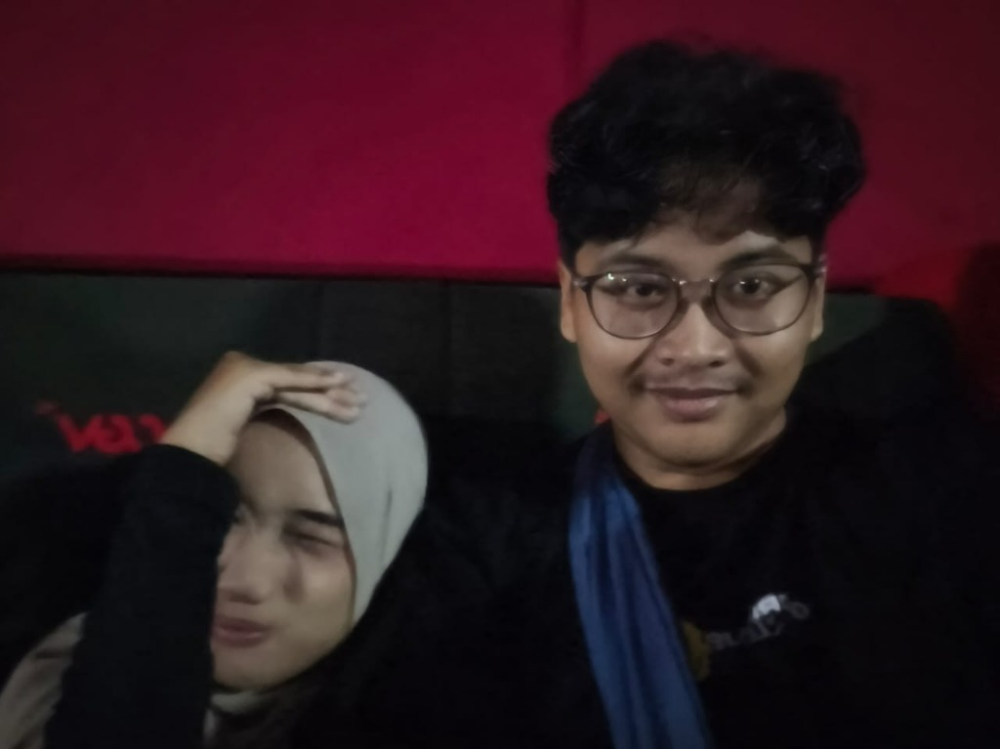
Duduk Sebelahan
"Latar dinding merah bioskop. Tempat kita berbagi cerita dan nahan tawa pas nonton bareng."
Cinema Lounge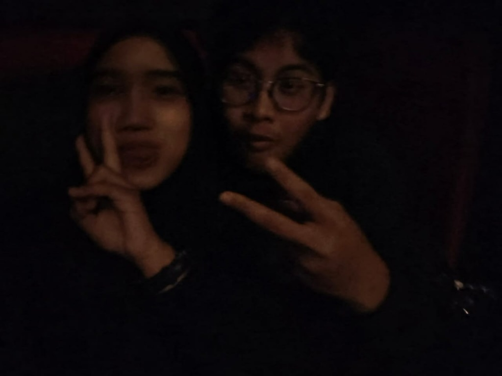
Senyum dalam Gelap
"Lampu studio udah redup tapi kita masih sempatkan foto bareng. Binar matamu selalu kelihatan terang."
Dark TheaterKenangan Abadi
"Tulisan kayu 'ragunan Zoo'. Bukti autentik kencan legendaris kita yang penuh tawa dan kebahagiaan."
Ragunan Landmark10 Hal yang Paling Aku Cintai Darimu
Sepuluh alasan manis kenapa kamu selalu jadi orang paling istimewa di duniaku setiap harinya.
Senyum & Tawamu yang Menular
Setiap kali kamu tersenyum lepas, semua rasa lelah dan beban hariku seketika hilang begitu saja.
Perhatian Kecil yang Tulus
Dari caramu nanya "udah makan belum?", bawain cemilan, sampai hal-hal kecil yang selalu bikin aku merasa dihargai.
Kesabaranmu yang Luar Biasa
Terima kasih selalu sabar menghadapi sifatku, mendengarkan ceritaku, dan jadi penenang di saat situasi sulit.
Tingkah Lucu & Menggemaskan
Gaya duck face manismu, ekspresi konyol pas lagi manja, dan tawa lucumu saat kita kencan selalu bikin kangen.
Teman Berpetualang Paling Seru
Diajak motoran jauh oke, diajak jalan kaki keliling Ragunan hayu, diajak jajan pinggir jalan selalu senang tanpa mengeluh.
Energi Positif & Binar Matamu
Binar di matamu selalu memancarkan kehangatan yang bikin aku merasa paling beruntung di dunia ini.
Pendengar Setia Segala Ceritaku
Apapun yang terjadi, kamu selalu jadi orang pertama yang aku cari untuk berbagi cerita bahagia maupun sedih.
Partner Kuliner Terbaik
Makan kentang spiral di Ragunan, popcorn bioskop, sampai jajan malam pinggir jalan selalu terasa sepuluh kali lebih lezat bareng kamu.
Ketulusan Hati & Kesetiaanmu
Mencintaimu itu mudah karena hatimu tulus, jujur, dan selalu membuatku merasa aman dan dihargai seutuhnya.
Karena Kamu Adalah Kamu
Aku mencintaimu bukan hanya karena kelebihanmu, tapi seluruh dirimu apa adanya. Kamu adalah duniaku, sayang.
Sebuah Surat dari Lubuk Hatiku
Ada pesan tulus yang aku simpan rapi dalam amplop bersegel ini. Sentuh atau klik amplop di bawah untuk membukanya.